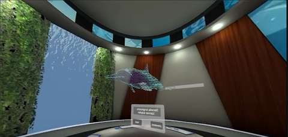
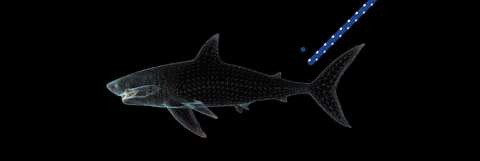

Project Case Study
Hybrid Classroom
A multiplayer learning environment with themed classrooms designed to support interactive, teacher-led lessons for in-person and remote learners.
Classroom interaction
The experience includes classroom environments for different subjects, interactive whiteboard markers and holographic visual effects. A teacher can control progression for a group of up to 20 students, including skipping a section for the whole group; students cannot trigger that group skip.

My contribution
I was the main developer, with a focus on the front end. I built the interaction system and holographic VFX, and connected the Unity client to the Colyseus server. I also contributed to the initial server-side connection work needed to get the client communicating with the service.
